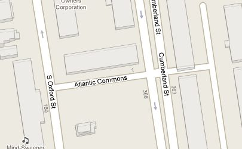

14. Spatial Relationships Exercise Answers¶
14.1. Exercises with answers¶
“What is the geometry value for the street named ‘Atlantic Commons’?”
SELECT ST_AsText(geom) FROM nyc_streets WHERE name = 'Atlantic Commons';
MULTILINESTRING((586781.701577724 4504202.15314339,586863.51964484 4504215.9881701))
“What neighborhood and borough is Atlantic Commons in?”
SELECT name, boroname FROM nyc_neighborhoods WHERE ST_Intersects( geom, ST_GeomFromText('LINESTRING(586782 4504202,586864 4504216)', 26918) );
name | boroname ------------+---------- Fort Green | Brooklyn
Note
“Hey, why did you change from a ‘MULTILINESTRING’ to a ‘LINESTRING’?” Spatially they describe the same shape, so going from a single-item multi-geometry to a singleton saves a few keystrokes.
More importantly, we also rounded the coordinates to make them easier to read, which does actually change results: we couldn’t use the ST_Touches() predicate to find out which roads join Atlantic Commons, because the coordinates are not exactly the same anymore.
“What streets does Atlantic Commons join with?”
SELECT name FROM nyc_streets WHERE ST_DWithin( geom, ST_GeomFromText('LINESTRING(586782 4504202,586864 4504216)', 26918), 0.1 );
name ------------------ Cumberland St Atlantic Commons
“Approximately how many people live on (within 50 meters of) Atlantic Commons?”
SELECT Sum(popn_total) FROM nyc_census_blocks WHERE ST_DWithin( geom, ST_GeomFromText('LINESTRING(586782 4504202,586864 4504216)', 26918), 50 );
1438
Previous: 13. Spatial Relationships Exercises
Next: 15. Spatial Joins